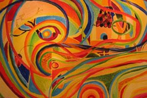
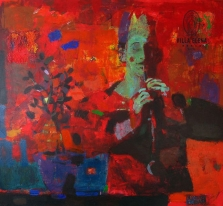
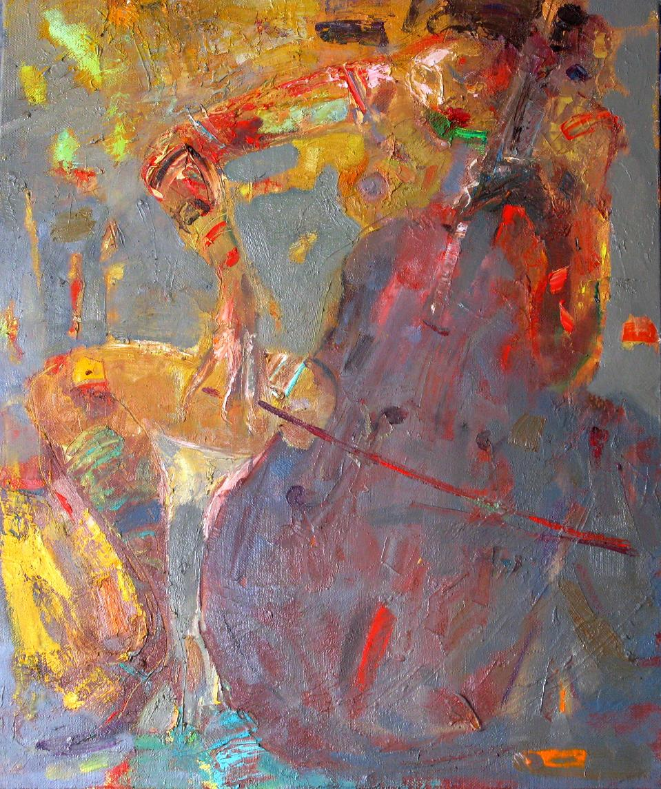
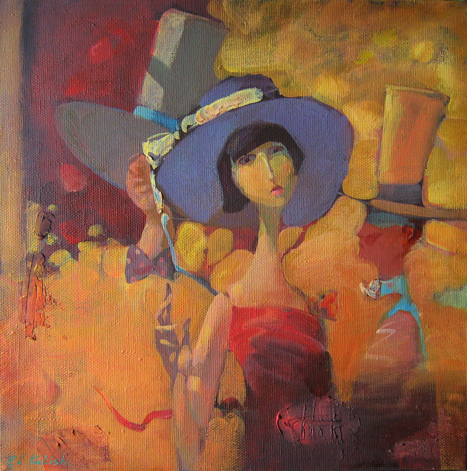

Абстракціонізм
Серед численних мистецьких напрямків ХХ століття абстракціонізм посідає особливе місце.
Започаткований в теоретичному і мистецькому аспектах видатним діячем російської культури В.Кандинським, абстракціонізм досить швидко перетворився на інтернаціональне об’єднання європейських митців, в якому помітну роль відігравали українські живописці.

З утвердженням незалежності України відкрилися широкі можливості для усунення “білих плям” у вивченні художнього процесу початку ХХ століття – періоду становлення й помітного розвитку нових тенденцій в українському мистецтві. У зв’язку з цим більш глибокого й предметного вивчення потребує як проблема традицій, адже абстракціонізм має виразні іконографічні витоки, так і новаторства, - тогочасна дійсність породила жанрове і стильове різнобарв’я, багатство образотворчих засобів.
Абстракціоністи обґрунтували нове розуміння змісту, форми, образу твору, намагалися “вписати” в контекст історичної традиції - як її новий зріз – проблему кольору, самостійним об’єктом вивчення зробили актуальну й до сьогодні ідею синтезу мистецтв. Усе це робить доцільним естетико-мистецтвознавчий аналіз абстракціонізму як непересічного явища культури ХХ століття.
Ідеї, які були висунуті абстракціоністами на початку становлення цього мистецтва, були з розумінням і зацікавленістю сприйняті українськими митцями на початку ХХ століття, а молоді митці незалежної України досить активно працюють як в межах традиційного абстракціонізму, так і намагаються його творчо модифікувати. Доцільність цих мистецьких спрямувань повинна бути об’єктом теоретичної уваги і небайдужого ставлення.
|  |  |  |
Абстракціонізм - це своєрідний вияв людських пошуків універсальних та суттєвих ознак буття шляхом відволікання від випадкового і несуттєвого. Відмовившись від реалістичного зображення предметів і явищ, від малюнку і сюжету, представники цього напрямку прагнули замінити натуралістичну предметність вільною грою кольорів, ліній і форм.
В абстракціонізмі виділяють дві лінії: абстрактний експресіонізм, що полягає в послідовній відмові від конкретності форм, що зображуються, з метою посилення експресії та конструктивний геометризм, який характеризується спробою конкретизувати абстрактні, загальні ідеї в геометричних формах.
Одна з цілей абстракціонізму - досягнення "гармонізації", створення певних колірних поєднань і геометричних форм, щоб викликати у глядача різноманітні асоціації.
Вгору